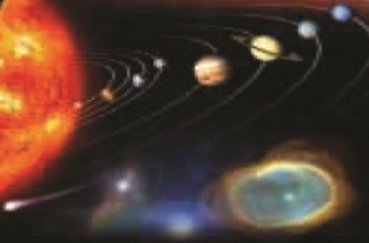

Bab 12 Tata Surya
Sistem Tata Surya
Tata surya adalah susunan benda-benda lagit yang terdiri atas matahari sebagai pusat tata surya, planet-planet, komet, meteoroid, dan asteroid yang mengelilingi matahari. Planet yang dekat dengan matahari bergerak lebih cepat daripada planet yang jauh dari Matahari.
Bidang edar planet-planet dalam mengelilingi matahari disebut bidang edar dan bidang edar bumi dalam mengelilingi matahari disebut bidang ekliptika. Susunan Tata Surya terdiri atas Matahari, Planet Dalam, Planet Luar, Komet, Meteorid, dan Asteroid.
Susunan Tata Surya:
Matahari adalah bintang yang berupa bola gas panas dan bercahaya yang menjadi pusat sistem tata surya. Matahari memiliki empat lapisan yaitu inti matahari, fotosfer, kromosfer, dan korona.
Bagian-bagian matahari :
Planet adalah benda langit yang tidak dapat memancarkan cahaya sendiri namun bisa memantulkan cahaya dari bintang yang diterimanya. Planet dalam (planet terestrial) adalah planet yang orbitnya dekat dengan Matahari.
Planet dalam berukuran kecil, memiliki sedikit satelit, berbatu, terestrial, terdiri atas mineral tahan api seperti silikat yang membentuk kerak dan mantelnya, logam seperti besi dan nikel yang membentuk intinya. Planet dalam terdiri atas Merkurius, Venus, Bumi, dan Mars
Planer luar(planet Jovian) adalah planet yang orbitnya jauh dari matahari, berukuran besar, memiliki banyak satelit, tersusun dari bahan ringan seperti hidrogen, helium, metana, dan amonia. Planet-planet dalam dan luar dipisahkan oleh sabuk asteroid.
Kondisi Bumi
Para pelaut mengamati hal yang pertama kali mereka lihat di laut adalah puncak kapal. Ini menunjukkan bahwa bumi bentuknya bulat. Begitu pula pada tahun 1522, Magelhaen telah membuktikan bumi bentuknya bulat, dengan mengadakan pelayaran arah lurus kemudian dia berhasil kembali ke tempat awal dia berlayar.
Rotasi bumi adalah perputaran bumi pada porosnya. Kala Rotasi Bumi adalah waktu yang dibutuhkan oleh bumi untuk sekali berputar, yaitu 23 jam 56 menit. Bumi berotasi dari barat ke timur. Dampak rotasi bumi yaitu gerak semu harian matahari, perbedaan waktu, pembelokan arah angin dan pembelokan arah arus laut.
Revolusi bumi adalah pergerakan bumi mengelilingi matahari. Kala revolusi bumi adalah waktu yang dibutuhkan oleh bumi untuk sekali mengelilingi matahari yaitu 365,25 hari. Dampak dari revolusi bumi yaitu gerak semu tahunan matahari, perbedaan lamanya siang dan malam, dan pergantian musim.
Kondisi Bulan
Bulan dalah benda langit yang terdekat dengan bumi sekaligus satelit bumi. Karena merupakan satelit, bulan tidak dapat memancarkan cahaya sendiri melainkan memancarkan cahaya Matahari. Bulan juga berputar dan mengelilingi bumi.
Bulan berbentuk bulat seperti planet, permukaannya berupa dataran kering, tandus, banyak kawah, terdapat pegunungan dan dataran tinggi. Bulan tidak memiliki atmosfer, sehingga sering terjadi perubahan suhu yang sangat drastis, bunyi tidak dapat merambat, tidak ada siklus air, tidak ditemukan makhluk hidup, dan sangat gelap gulita.
Fase-fase bulan merupakan perubahan bentuk bulan yang terlihat di Bumi. Ini dikarenakan posisi relatif antara bulan, bumi, dan matahari. Fase-fase bulan ada 5 yaitu :
- Bulan baru terjadi ketika posisi bulan berada di antara bumi dan matahari. Selama bulan baru, sisi bulan yang menghadap ke matahari nampak terang dan sisi yang menghadap bumi nampak gelap.
- Bulan sabit terjadi ketika bagian bulan yang terkena sinar matahari sekitar seperempat, sehingga permukaan bulan yang terlihat di bumi hanya seperempatnya.
- Bulan separuh terjadi ketika bagian bulan yang terkena sinar matahari sekitar separuhnya, sehingga yang terlihat dari bumi juga separuhnya (kuartir pertama).
- Bulan cembung terjadi ketika bagian bulan yang terkena sinar matahari tiga perempatnya, yang terlihat dari bumi juga tiga perempatnya. Sehingga, kita dapat melihat bulan cembung.
- Bulan purnama terjadi ketika semua bagian bulan terkena sinar matahari, begitu juga yang terlihat dari bumi. Sehingga, kita dapat melihat bulan purnama (kuartir kedua).

Gerhana
Gerhana terjadi ketika posisi bulan dan bumi menghalangi sinar matahari, sehingga bumi atau bulan tidak mendapatkan sinar matahari. Ada dua jenis gerhana, yaitu gerhana matahari dan gerhana bulan.
Gerhana Matahari terjadi ketika posisi bulan berada di antara matahari dan bumi, ketiganya terletak dalam satu garis lurus, terjadi pada waktu bulan baru. Akibat ukuran bulan lebih kecil dibanding Bumi, maka terjadi tiga kemungkinan gerhana, yaitu :
-
Gerhana matahari total , terjadi pada daerah-daerah yang berada di bayangan inti (umbra), sehingga cahaya matahari tidak tampak sama sekali, terjadi sekitar 6 menit.
-
Gerhana matahari cincin , terjadi pada daerah yang terkena lanjutan umbra, sehingga matahari terlihat seperti cincin.
-
Gerhana matahari sebagian , terjadi pada daerah-daerah yang terletak di antara umbra dan penumbra (bayangan kabur), sehingga matahari terlihat hanya sebagian.